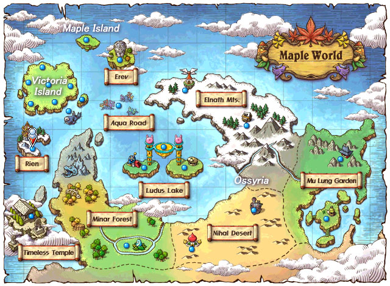
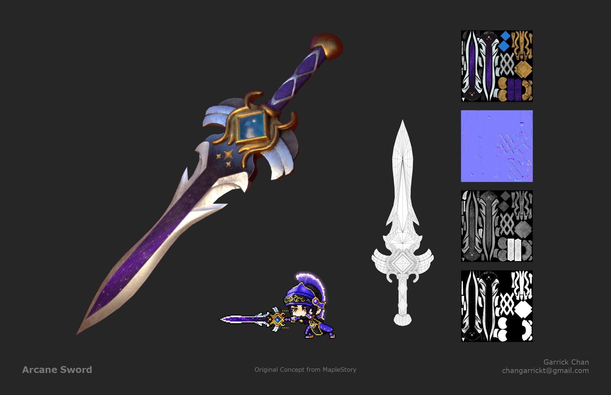
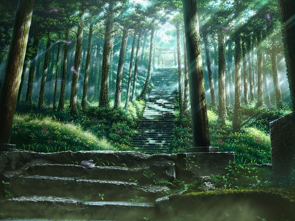

Map
I will show you the way to find me in this chaotic world
Pretend you have this map and this sword
 
You must walk to El Nath's village. If you fly their Jr. Balrog will kill you. And he looks like this
When you arrived to El Nath's village, find an ice bridge and climb to the top.
On top of the mountain there is a forest and you must look for a magic transportation stone

The stone
You may have to fight a dragon who had live over 1000 years to protect the magic stone. No one have ever kill it so good luck
Once you have the magic transportation stone, it will automatically bring you to Earth.
If you are already on planet Earth then you don't have to find me
You can email me through dao@hartford.edu